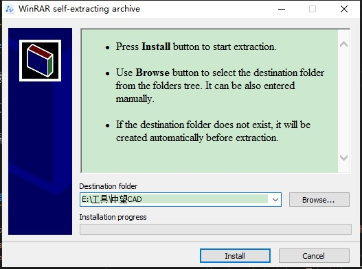
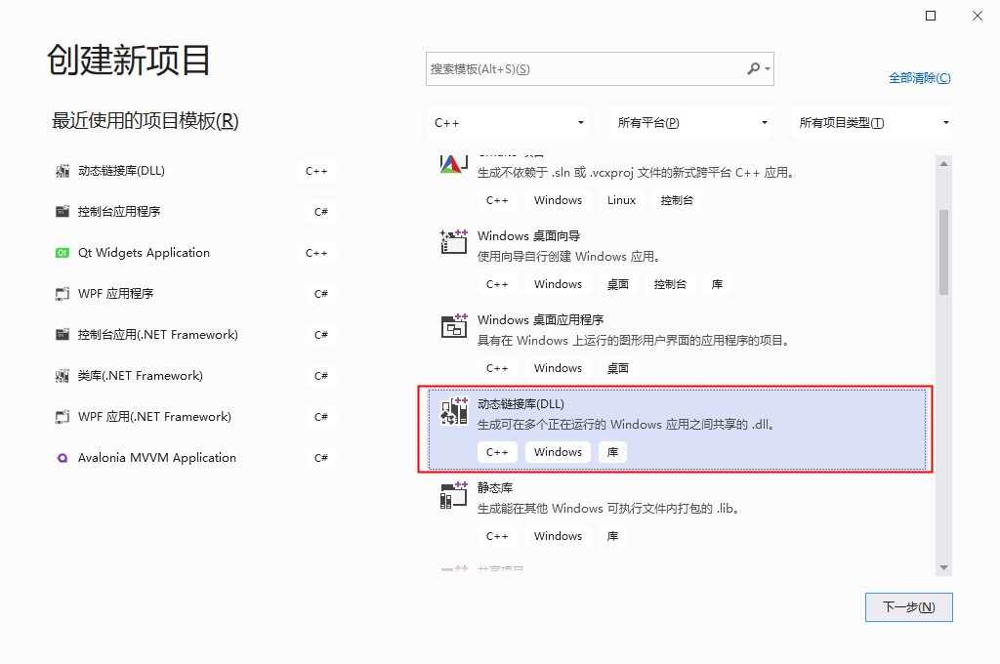

使用c++在中望CAD二次开发步骤
安装SDK
安装最新版本的中望CAD二次开发SDK，我这里安装的是最新的2021版，对应的vs是2017版，2019也是可以用，只是没有项目模板 注意安装路径一定不能有中文，否则后面引用会出错或者需要全部手动引用 
安装项目模板
SDK安装完成之后会自动弹出安装项目模板的窗口，如果你没有弹出可以在你上一步选择的安装目录中找到ZWCAD_2021_ZRXSDK\Tools\ZRXWizard\ZRXWizardSetup.exe手动安装  这里的目录就是SDK的安装目录，默认选择就是对的，如果不对请手动选择一下 点击install安装
这里的目录就是SDK的安装目录，默认选择就是对的，如果不对请手动选择一下 点击install安装
创建项目
vs2017
如果你是vs2017，到这里就可以了，在创建项目界面选择创建cad项目了 
vs2019
创建动态链接库项目 
修改项目文件，以便可以找到到中望CAD的库和头文件，不然就要手动引用很麻烦 在你的项目目录找到项目文件
xxx.vcxproj，xxx为项目名称，用记事本打开，找到如下代码的位置
1
2
3
4
5
6
7
8
9
10
11
12
<ImportGroup Label="PropertySheets" Condition="'$(Configuration)|$(Platform)'=='Debug|Win32'">
<Import Project="$(UserRootDir)\Microsoft.Cpp.$(Platform).user.props" Condition="exists('$(UserRootDir)\Microsoft.Cpp.$(Platform).user.props')" Label="LocalAppDataPlatform" />
</ImportGroup>
<ImportGroup Label="PropertySheets" Condition="'$(Configuration)|$(Platform)'=='Release|Win32'">
<Import Project="$(UserRootDir)\Microsoft.Cpp.$(Platform).user.props" Condition="exists('$(UserRootDir)\Microsoft.Cpp.$(Platform).user.props')" Label="LocalAppDataPlatform" />
</ImportGroup>
<ImportGroup Label="PropertySheets" Condition="'$(Configuration)|$(Platform)'=='Debug|x64'">
<Import Project="$(UserRootDir)\Microsoft.Cpp.$(Platform).user.props" Condition="exists('$(UserRootDir)\Microsoft.Cpp.$(Platform).user.props')" Label="LocalAppDataPlatform" />
</ImportGroup>
<ImportGroup Label="PropertySheets" Condition="'$(Configuration)|$(Platform)'=='Release|x64'">
<Import Project="$(UserRootDir)\Microsoft.Cpp.$(Platform).user.props" Condition="exists('$(UserRootDir)\Microsoft.Cpp.$(Platform).user.props')" Label="LocalAppDataPlatform" />
</ImportGroup>
注意Label内容，否则可能找到另一个节点。
把以上4个节点换成如下代码
1
2
3
4
5
6
7
8
9
10
11
12
13
14
15
16
<ImportGroup Label="PropertySheets" Condition="'$(Configuration)|$(Platform)'=='Debug|Win32'">
<Import Project="$(UserRootDir)\Microsoft.Cpp.$(Platform).user.props" Condition="exists('$(UserRootDir)\Microsoft.Cpp.$(Platform).user.props')" Label="LocalAppDataPlatform" />
<Import Project="$(UserRootDir)\zrx2021.props" />
</ImportGroup>
<ImportGroup Label="PropertySheets" Condition="'$(Configuration)|$(Platform)'=='Release|Win32'">
<Import Project="$(UserRootDir)\Microsoft.Cpp.$(Platform).user.props" Condition="exists('$(UserRootDir)\Microsoft.Cpp.$(Platform).user.props')" Label="LocalAppDataPlatform" />
<Import Project="$(UserRootDir)\zrx2021.props" />
</ImportGroup>
<ImportGroup Label="PropertySheets" Condition="'$(Configuration)|$(Platform)'=='Debug|x64'">
<Import Project="$(UserRootDir)\Microsoft.Cpp.$(Platform).user.props" Condition="exists('$(UserRootDir)\Microsoft.Cpp.$(Platform).user.props')" Label="LocalAppDataPlatform" />
<Import Project="$(UserRootDir)\zrx2021.props" />
</ImportGroup>
<ImportGroup Label="PropertySheets" Condition="'$(Configuration)|$(Platform)'=='Release|x64'">
<Import Project="$(UserRootDir)\Microsoft.Cpp.$(Platform).user.props" Condition="exists('$(UserRootDir)\Microsoft.Cpp.$(Platform).user.props')" Label="LocalAppDataPlatform" />
<Import Project="$(UserRootDir)\zrx2021.props" />
</ImportGroup>
主要就是引入zrx2021.props配置，这个文件中保存了中望CAD的库文件和头文件位置。这个文件在我的电脑上路径是C:\Users\Administrator\AppData\Local\Microsoft\MSBuild\v4.0\zrx2021.props，Administrator是我的用户名，请换成你自己的用户名。
- 引入CAD头文件
打开pch.h文件，修改如下：
1
2
3
4
5
6
7
8
9
10
11
12
13
14
15
16
17
18
19
20
21
22
23
24
// pch.h: 这是预编译标头文件。
// 下方列出的文件仅编译一次，提高了将来生成的生成性能。
// 这还将影响 IntelliSense 性能，包括代码完成和许多代码浏览功能。
// 但是，如果此处列出的文件中的任何一个在生成之间有更新，它们全部都将被重新编译。
// 请勿在此处添加要频繁更新的文件，这将使得性能优势无效。
#ifndef PCH_H
#define PCH_H
// 添加要在此处预编译的标头
#include "framework.h"
//引入头文件
#include "accmd.h"
#include "AcString.h"
#include "gepnt3d.h"
#include "geassign.h"
#include "dbents.h"
#include "dbmain.h"
#include "acdocman.h"
#include "acarray.h"
#include "adscodes.h"
#endif //PCH_H
- 添加CAD入口文件 新增一个cpp类文件，代码如下
1
2
3
4
5
6
7
8
9
10
11
12
13
14
15
16
17
18
19
20
21
22
23
24
25
26
27
28
29
30
31
32
33
34
35
36
37
38
39
40
41
42
43
44
45
46
47
48
49
50
51
52
53
54
55
56
57
58
59
60
61
62
#include "pch.h"
#include "tchar.h"
#include <aced.h>
#include <rxregsvc.h>
void helloWorld()
{
acutPrintf(_T("\nHello World!"));
}
void helloWorld2()
{
acutPrintf(_T("\nHello World2!"));
}
void initApp()
{
// register a command with the AutoCAD command mechanism
acedRegCmds->addCommand(_T("HELLOWORLD_COMMANDS"),
_T("Hello"),
_T("Hello"),
ACRX_CMD_TRANSPARENT,
helloWorld);
acedRegCmds->addCommand(_T("HELLOWORLD_COMMANDS"),
_T("Hello2"),
_T("Hello2"),
ACRX_CMD_TRANSPARENT,
helloWorld2);
}
void unloadApp()
{
acedRegCmds->removeGroup(_T("HELLOWORLD_COMMANDS"));
}
extern "C" AcRx::AppRetCode
zcrxEntryPoint(AcRx::AppMsgCode msg, void* pkt)
{
switch (msg)
{
case AcRx::kInitAppMsg:
acrxDynamicLinker->unlockApplication(pkt);
acrxRegisterAppMDIAware(pkt);
initApp();
break;
case AcRx::kUnloadAppMsg:
unloadApp();
break;
default:
break;
}
return AcRx::kRetOK;
}
#ifdef _WIN64
#pragma comment(linker, "/export:zcrxEntryPoint,PRIVATE")
#pragma comment(linker, "/export:zcrxGetApiVersion,PRIVATE")
#else // WIN32
#pragma comment(linker, "/export:_zcrxEntryPoint,PRIVATE")
#pragma comment(linker, "/export:_zcrxGetApiVersion,PRIVATE")
#endif
编译
注意编译的版本要和中望cad版本一致，也就是中望cad是32位的就要编译成32位的程序，中望cad是64位的就要编译成64位的程序，编译之后在项目目录\Out\bin中找到对应版本的程序
在中望cad中加载

参考资料
本文会经常更新，请阅读原文： https://dashenxian.github.io/post/%E4%B8%AD%E6%9C%9BCAD%E4%BD%BF%E7%94%A8C++%E4%BA%8C%E6%AC%A1%E5%BC%80%E5%8F%91%E6%AD%A5%E9%AA%A4 ，以避免陈旧错误知识的误导，同时有更好的阅读体验。

本作品采用 知识共享署名-非商业性使用-相同方式共享 4.0 国际许可协议 进行许可。欢迎转载、使用、重新发布，但务必保留文章署名 吕毅 （包含链接： https://dashenxian.github.io ），不得用于商业目的，基于本文修改后的作品务必以相同的许可发布。如有任何疑问，请 与我联系 (walter.lv@qq.com) 。